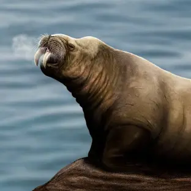
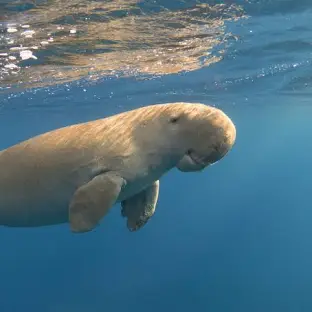
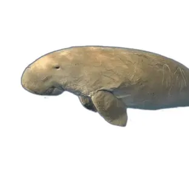
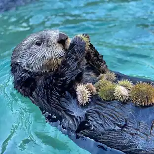

mamiferos
¿Que son los mamiferos?
Los mamíferos pertenecen al grupo de los vertebrados.
caracteristicas
Los mamíferos pertenecen al grupo de los vertebrados. Se caracterizan por tener el cuerpo cubierto de pelaje, por nacer del vientre materno (vivíparos) y por alimentar a las crias con leche por medio de glándulas mamarias
clasificacion
ejemplos
morsa, La morsa ( Odobenus rosmarus ) es un gran mamífero marino pinnípedo con distribución discontinua alrededor del Polo Norte en el océano Ártico y los mares subárticos del hemisferio norte
- 
dugongo, Y a diferencia de los manatíes, que utilizan áreas de agua dulce, el dugongo es estrictamente un mamífero marino
- 
sirenia
Los sirenios son el orden de mamíferos placentarios que comprende a las vacas marinas modernas y sus parientes extintos
- 
oso polar
El oso polar es considerado como el carnívoro más grande que habita el planeta

nutria,La nutria marina está categorizada como “En Peligro” por el Decreto Supremo N° 004-2014-MINAGRI que aprueba la actualización de la lista de clasificación
- 
inicio